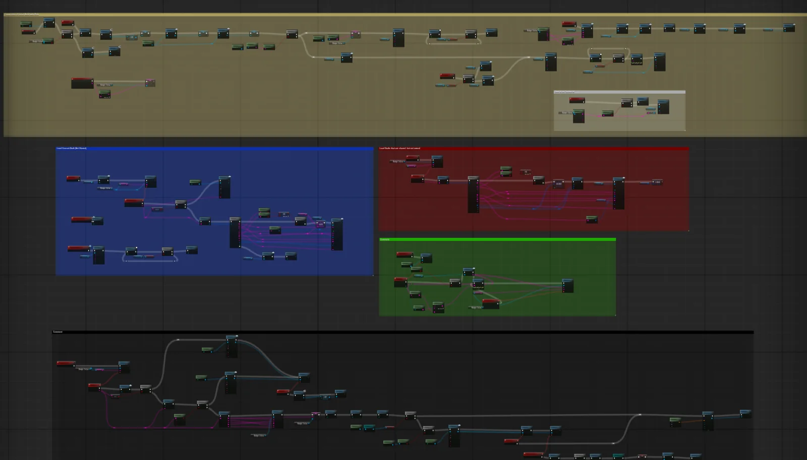

Describe
“A health system with damage and healing.” The request is routed by a keyword classifier, with a small model as tie-breaker when the intent is unclear.
02AI PoweredUnreal Engine 5.7 editor plugin
Type what the actor should do. The plugin plans the Blueprint, then builds it inside the editor one real operation at a time: variables, components, functions, event graph nodes, pin connections, defaults, and a compile at the end.

The model never touches the asset directly. It writes a plan of small, typed editor operations, and the editor executes them against the real Blueprint API.
Most AI tools for Unreal hand you a snippet and leave the wiring to you. This one produces the thing itself: a Blueprint in the Content Browser with the right parent class, typed variables with defaults, a component hierarchy, functions with inputs and outputs, and an event graph whose pins are actually connected.
The split is deliberate. A planner running outside the editor decides what to build. A bridge inside the editor exposes a small vocabulary of operations and knows how to carry each one out correctly using the Kismet and Blueprint editor APIs. Every step is a round trip, so the plan can react to what the engine actually created.
The result compiles, shows up in Ctrl+Z-free but inspectable form in the Blueprint editor, and can be extended by hand like any other asset.
Each step runs to completion in the editor before the next one is sent, so later steps can reference real node GUIDs and real variable lists.
“A health system with damage and healing.” The request is routed by a keyword classifier, with a small model as tie-breaker when the intent is unclear.
A stronger model rewrites the request into an explicit spec: parent class, variables, components, functions, constraints. Its system prompt is the executor’s own contract, so it only asks for things the editor can do.
A plan of CreateBlueprint, AddVariable, AddComponent and AddFunction steps, closed with GetVariables and GetComponents so the editor reports what now exists.
Given the real structure, the planner emits AddNode, SetNodeProperty, GetNodePins, ConnectPins and SetPinDefaultValue steps for the event graph and each function graph.
Each step crosses a WebSocket as one command, is executed on the game thread through reflection, and returns JSON. The plan ends with CompileBlueprint.
The editor side is a generic remote-procedure layer. Adding a capability means adding one Blueprint-callable function; nothing in the protocol changes.
{GetCharMove.nodeGuid}; the service resolves them from the GUIDs the editor returned for earlier steps.// One step on the wire, after placeholder resolution { "type": "command_batch", "payload": { "batch_id": "…", "commands": [{ "id": "…", "api_call": { "target": "BlueprintBridge", "method": "ConnectPins", "parameters": { "BlueprintPath": "/Game/BP_Flyer.BP_Flyer", "SourceNodeGuid": "7F3A…", "SourcePinName": "CharacterMovement", "TargetNodeGuid": "C21D…", "TargetPinName": "self" } } }] } } // Reply { "type": "execution_feedback", "payload": { "batch_id": "…", "results": [{ "command_id": "…", "status": "success", "execution_time_ms": 4.1, "result": { "return": "{\"success\":true}" } }] } }
The planner is given exactly what the bridge supports, how pins are named, and what to do instead when a feature is out of scope.
Phase 1 works from a closed vocabulary: a fixed list of variable types, eighteen component classes, and three parent classes. Phase 2 receives the structure the editor actually created and a reference of around 150 engine functions with their pin names, plus a pin-naming contract for branches, sequences, casts, variable getters and setters, and function entry and result nodes.
Features that cannot be built reliably through the bridge are not left to chance. The prompt names each one and gives the workaround: interpolate on Tick instead of a Timeline, chain equality branches instead of a Switch, check distance on Tick instead of overlap events.
Before anything executes, a static validator checks the plan: node classes against a whitelist, unique node names, no Delay inside functions, no clashing function and event names, and that every node whose pins depend on a property change is followed by a pin refresh. A failed check feeds the error back for up to three regenerations. Truncated responses are salvaged step by step and continued from the last complete step.
// Phase 2 plan excerpt: set a Character to Flying
{ "step": "Get CharacterMovement",
"cmd": { "m": "AddNode", "p": { "NodeClass": "K2Node_VariableGet",
"NodeName": "GetCharMove", "PosX": 200, "PosY": 100 } } },
{ "step": "Bind variable",
"cmd": { "m": "SetNodeProperty", "p": { "NodeGuid": "{GetCharMove.nodeGuid}",
"PropertyName": "VariableName",
"ValueJson": "{\"value\": \"CharacterMovement\"}" } } },
{ "step": "Refresh pins",
"cmd": { "m": "GetNodePins", "p": { "NodeGuid": "{GetCharMove.nodeGuid}" } } },
{ "step": "SetMovementMode node",
"cmd": { "m": "AddNode", "p": { "NodeClass": "K2Node_CallFunction",
"NodeName": "SetMoveMode", "PosX": 450, "PosY": 0 } } },
{ "step": "Bind function",
"cmd": { "m": "SetNodeProperty", "p": { "NodeGuid": "{SetMoveMode.nodeGuid}",
"PropertyName": "FunctionName",
"ValueJson": "{\"value\": \"SetMovementMode\"}" } } },
{ "step": "Wire component into self",
"cmd": { "m": "ConnectPins", "p": {
"SourceNodeGuid": "{GetCharMove.nodeGuid}", "SourcePinName": "CharacterMovement",
"TargetNodeGuid": "{SetMoveMode.nodeGuid}", "TargetPinName": "self" } } },
{ "step": "Mode = Flying",
"cmd": { "m": "SetPinDefaultValue", "p": { "NodeGuid": "{SetMoveMode.nodeGuid}",
"PinName": "NewMovementMode", "ValueJson": "{\"value\": \"Flying\"}" } } }
Most of the engineering lives here: taking loose, human-style names from the planner and turning them into correctly typed, correctly reconstructed graph nodes.
Assets are created through the Blueprint factory with the resolved parent class. Variables map from friendly type names to full pin types, including UE5 doubles, structs, object references and arrays. Components go into the construction script hierarchy. Functions are real graphs with user-defined entry and result pins, pure when asked.
A registry maps class names and aliases such as “branch”, “do once” or “cast to” onto the right K2Node type and creation path. An unknown name returns the full list of supported types, so the planner can self-correct on the next attempt.
Around 250 aliases translate display and UE4-era names to real UFunctions, such as GetActorLocation to its K2 counterpart. Lookup then tries script paths across engine modules, class-by-name, a static class list and finally a global class scan. Blueprint-local functions win over library functions, and float names are rewritten to double for UE5.
When a bound function turns out to be an array library call, the node is replaced with a CallArrayFunction node. The original GUID is copied onto the replacement so every later step that references it still resolves.
Reconstructing a variable node can drop the double subcategory or the array container. The bridge checks the pin type afterwards and restores every field. Wildcard array pins get their element type propagated manually using the schema’s change notifications, without a reconstruct that would reset them.
Pins are found by exact name, then by semantic groups like ReturnValue and Result, self and Target, then by space-stripped, camel-split and b-prefixed variants, then by partial match. Object outputs are routed into the first matching self or object input. Sequence outputs are renamed to a fixed Then_N contract.
The same socket, protocol, executor and registry also serve a sibling feature that builds UMG widget hierarchies from a reference image. Only the target name in each command differs, which is what the bridge design was meant to allow.
Requests that need both a widget and the logic behind it are handled in order: the widget service runs first, then the same goal is dispatched to the Blueprint service with orchestrator status messages in between.
Phase 1 ends by asking the editor for its variables and components. Those real results, not the model’s memory of what it asked for, are the input to the logic phase.
An index of about 3,300 engine function signatures across fifteen core classes is searched lexically for each request, and the top matches are appended to the prompt to cut down on invented function names.
Fences, comment headers and raw arrays are all handled. Finish-reason truncation is detected, complete steps are salvaged by regex, and continuation calls resume from the last good step with a compile step guaranteed at the end.
Because invocation is reflection-driven, the Blueprint bridge grew from a handful of operations to the full node and pin vocabulary without a single protocol change on the service side.